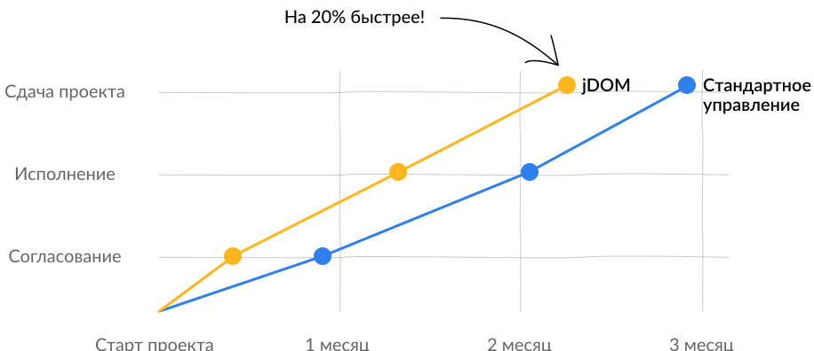

Зачем вам использовать JDom?
Быстро и удобно посчитать смету проектов
Организовать команду и назначить каждому свою работу
Оперативно информировать
заказчика об этапах готовности проекта
Контролируй вместе с jDOM
Забудьте о проблемах
при общении с заказчиком
Определяйте работы и сроки выполнения
на начальном этапе
Ведение проектов может быть проще и быстрее
